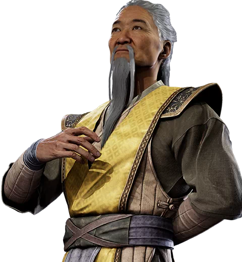
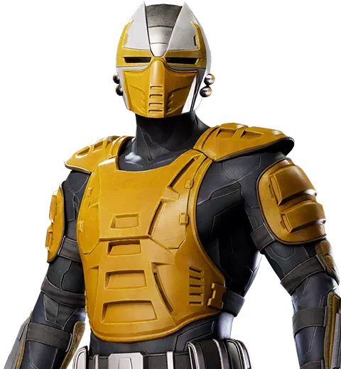
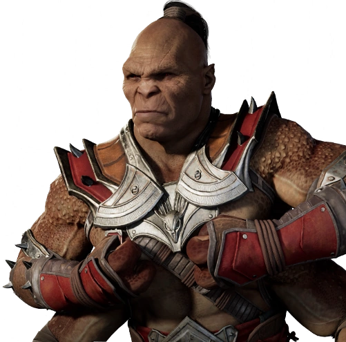
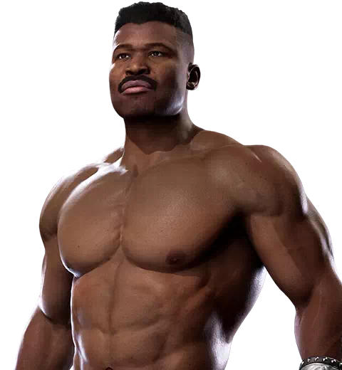

Scorpion
Espectro Vingativo
Hanzo Hazashi foi em vida o mestre dos shirai ryu, após sua morte ele retornou graças a Quan Chi em busca de vingança contra aqueles que destruiram seu clã

Embora os Kameos sejam uma das mecanicas principais do jogo suas existências não necessariamente são canônicas
Ninja criomante
Diferente do Sub Zero da história principal, este é o mesmo sub zero dos jogos anteriores, Kuai Liang, que busca vingança contra scorpion por ter assassinado seu irmão.
Shaolin prodígio
Shujinko era um jovem monge aventureiro, ele viajou por todos os reinos aprendendo diversas tequinicas de combate com inúmeros guerreiros, manipulado por Damashi ele foi responsável por diversos atos perversos como ajudar no renascimento de onaga
Espectro Vingativo
Hanzo Hazashi foi em vida o mestre dos shirai ryu, após sua morte ele retornou graças a Quan Chi em busca de vingança contra aqueles que destruiram seu clã
Centauro Guerreiro
Motaro é um guerreiro da raça dos Centauros.Motaro, junto com toda a sua raça, nutre um ódio profundo pelos Shokan, a quem ele vê como inferiores. As duas raças lutam constantemente entre si para provar seu valor e finalmente definir qual delas é superior.
Guerreiro em busca de glória
Nascido e criado na vila de Fengjian, Kung Lao passou a vida trabalhando nos campos. Em uma vida honrada, e até mesmo gloriosa. O maior medo de Kung Lao é que sua vida não dê em nada. Ele ora fervorosamente para ser chamado para fazer algo maior. Suas orações são atendidas quando ele é convidado a se juntar aos campeões do Plano Terreno. Como um guerreiro lutando por sua honra, Kung Lao sabe que suas vitórias serão lembradas por muito tempo.
Ninja Cibernético
Cyrax foi um dos primeiros ninjas a ser transformado em ciborgue pela iniciativa Cibernética dos Lin Kuei, Cyrax se tornou um assassino sem sentimentos e incapaz de desobedecer suas ordem tendo a missão de caçar renegados do Lin Kuei
Aprendiz Ambiciosa
Frost foi uma das aprendizes de Sub Zero. Suas ambições a tornam capaz de qualquer ato, até mesmo trair seu mestre e clã
Campeão dos Shokan
Goro é um dos guerreiros mais poderosos da Exoterra e um de seus campeões. O estilo de luta de Goro sempre girou em torno de aproveitar sua força bruta e agilidade surpreendente.
Oficial de Honra
Jax é um oficial das Forças Especiais. Ele é cuidadoso e sempre atento ao que seus homens estão fazendo. Quando surge a necessidade, ele é uma fera no campo de batalha com a atitude e a ferocidade de um leão capaz do uso inescrupuloso da tecnologia mais avançada à sua disposição para melhorar a si mesmo e a sua unidade.
Mercenário Impiedoso
Como mercenário e líder do cartel do crime internacional conhecido como Black Dragon, Kano vai além da mera brutalidade e agressão ao ser também astuto. Kano é altamente oportunista e incrivelmente egoísta, disposto a trair seu próprio reino e até mesmo seus próprios aliados por dinheiro ou ganho pessoal.

Insurgente Rebelde
Originário do Reino da Ordem, Darrius é um homem ambicioso e sem escrúpulos cujos esquemas promovem suas próprias ambições. Para os seus seguidores, bem como para os patriotas de Seido, ele é um revolucionário, lutador pela liberdade e visionário. Para seus inimigos e outras pessoas, ele é um terrorista e um bandido. Ele é mais conhecido pelos tumultos massivos que inicia em Seido para relaxar o regime opressivo local.

Assassina de Quan Chi
Sareena foi uma assassina de Quan Chi, mas se voltou contra ele. Sua aparência jovem esconde sua verdadeira forma de demônio horrível. No passado, ela precisava da magia de Quan Chi para sustentar sua forma humana, mas desde que escapou recentemente do seu controle, ela conseguiu encontrar uma maneira de permanecer humana sem ele, no entanto, ela permanece cautelosa com sua natureza demoníaca natural.

Iniciativa Cibernética
Sektor representa a coisa mais próxima do mal que um ciborgue pode ser, combinando características de um ninja de sangue frio, um leal fanático e uma máquina de matar destrutiva adequada para a guerra moderna.